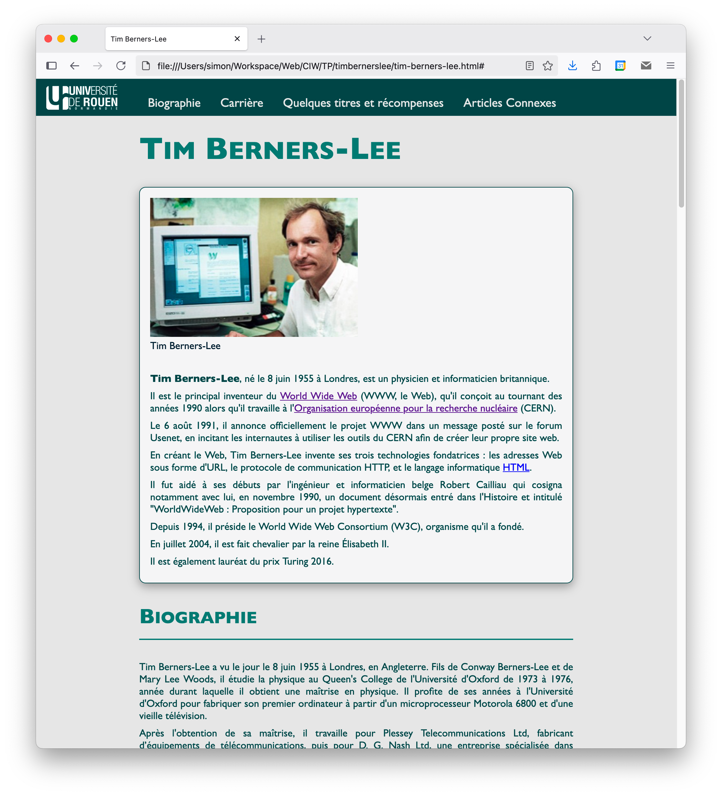
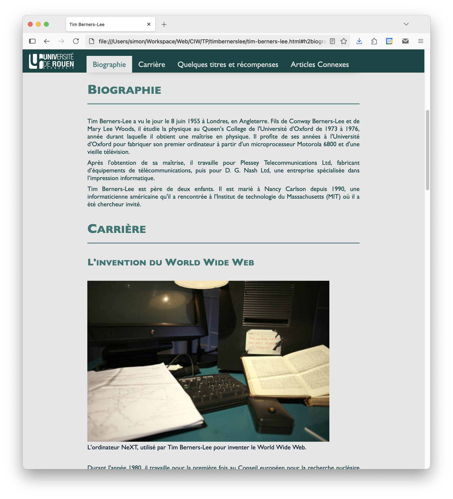
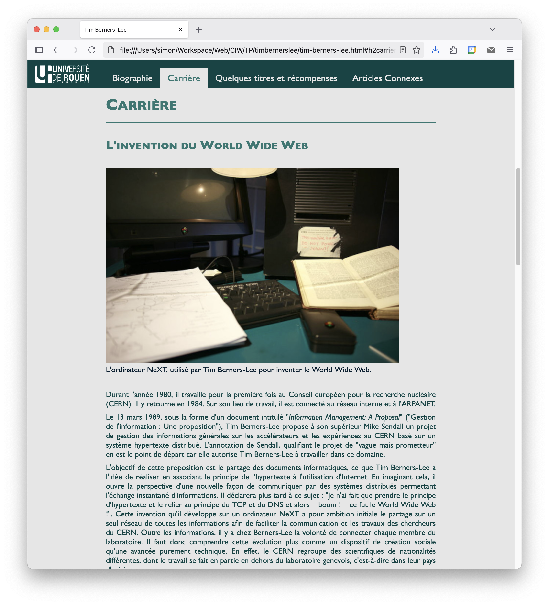
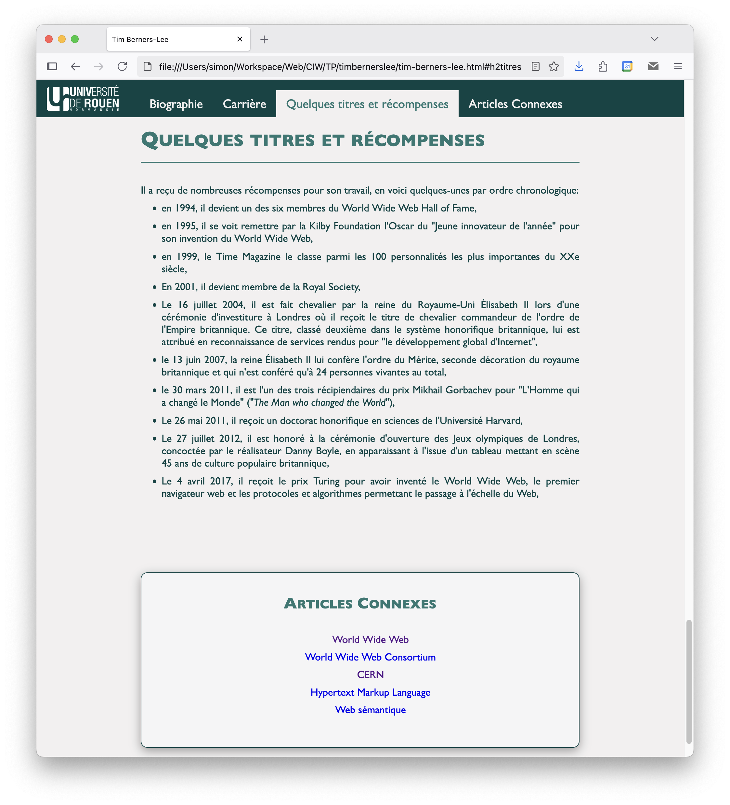
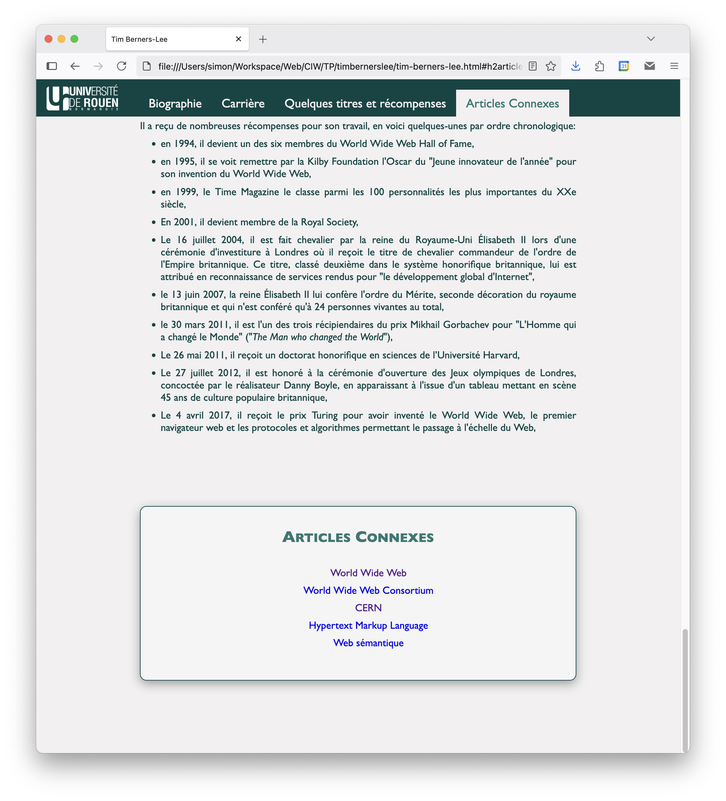

Conception d'Interface Web
Travaux Pratiques
HTML
Préparation
Pour ces TP, vous allez principalement concevoir des pages HTML que vous allez enregistrer dans un dossier personnel et que vous allez tester dans un navigateur web. Vous pouvez utiliser l'éditeur de texte ou l'IDE de votre choix pour éditer ces pages. En revanche, il est préférable d'utiliser le navigateur Mozilla Firefox pour les tests. Si vous ne souhaitez pas utiliser Firefox, un autre navigateur fera tout à fait l'affaire mais les manipulations décrites dans cet énoncé devront être adaptées.
Pour la mise en place de vos outils :
- Créez un répertoire de travail dans votre dossier personnel (
Z:), dans lequel vous placerez vos fichiers sources. - Créez également un premier sous-dossier pour cet exercice. Vous ferez de même pour chaque exercice.
- Créez et éditez un fichier HTML avec le code source ci-dessous.
<!doctype html>
<html>
<head>
<title>Premier exercice</title>
</head>
<body>
<h1>Master SID</h1>
<h2>Conception d'Interface Web (CIW)</h2>
<p>
Ceci est le premier exercice de TP du cours de <em>Conception d'Interface
Web</em> du Master SID de l'Université de Rouen Normandie.
</p>
</body>
</html>
Validation
Détecter des erreurs de syntaxe ou de structure dans un fichier HTML est compliqué car il n’y a pas de compilation. À l’interprétation, les navigateurs analysent le langage de façon très permissive et peuvent même parfois apporter des corrections automatiques pour réaliser l’affichage.
- Téléchargez le fichier
debug-example.htmlmis à disposition sur UniversiTICE. - Ouvrez-le dans un navigateur et ouvrez l’outil inspecter.
- Le code HTML qui apparaît dans la fenêtre du bas n’est pas exactement identique au code du fichier téléchargé. Le navigateur a opéré à des corrections automatiques : lesquelles ?
- Ouvrez maintenant le validateur du W3C : https://validator.w3.org/.
- Faites le diagnostique du fichier
debug-example.html. - En vous aidant du compte-rendu, corrigez toutes les erreurs jusqu’à ce que le validateur n’en détecte plus aucune.
Structuration
Le but de cet exercice est d'écrire une page HTML reprenant la structure du document tim-berners-lee.pdf, disponible sur UniversiTICE. Le texte "brut" est fourni dans le fichier tim-berners-lee.txt. Pour structurer cette page, vous devez respecter les contraintes suivantes :
- Chaque partie de ce texte doit être incluse dans une ou plusieurs balises structurantes HTML5 (e.g. article, section, aside, etc.). Aidez-vous des titres pour structurer de façon pertinente.
- Les phrases bleues et soulignées tout en bas de la page sont des liens vers des articles Wikipédia. Ces derniers devront s’ouvrir dans un nouvel onglet. Les liens de la table des matières en revanche, sont des liens internes à la page.
- La page doit être datée et ”signée” avec les balises sémantiques prévues à cet effet.
- La vérification de cette page HTML (https://validator.w3.org/) ne doit retourner aucune erreur ni avertissement.
Formulaires
Le but de cet exercice est de reproduire le formulaire de la figure ci-dessous.
Pour parvenir à ce résultat, vous aurez besoin de vous documenter ; par exemple en allant ici : https://developer.mozilla.org/en-US/docs/Learn_web_development/Extensions/Forms. Voici quelques informations supplémentaires pour vous guider :
- les éléments de ce formulaire, à l’exception des boutons Valider et Effacer, sont regroupés dans un
fieldset. - Les formulaires servent normalement à saisir des informations qui sont ensuite envoyées au serveur. N’ayant pas de serveur à disposition, ni d’application serveur pour traiter ces données, le formulaire simulera l’envoie vers une page fictive. Actionner le bouton Valider fera normalement apparaître une erreur 404.
- L’agencement des différents éléments du formulaire est à réaliser avec un ou des tableaux HTML.
Pour terminer, vous devez vérifier que votre page ne déclenche pas d’erreur ou d’avertissement (https://validator.w3.org/).
CSS
Exercice préliminaire
En guise de premier exercice sur les sélecteurs, rendez-vous à l’adresse : https://flukeout.github.io/. Vous y trouverez un jeu dont le but est de définir le sélecteur adéquat pour sélectionner certains éléments d’un petit extrait de code HTML. Une aide est affichée à la droite de l’écran, mais il peut être utile de consulter la page https://developer.mozilla.org/en-US/docs/Web/CSS/CSS_selectors avant de vous lancer.
Préparation
Mise en place
Vous avez vu en cours qu’il y avait trois façons d’appliquer des styles CSS à une page HTML :
- en utilisant l’attribut style dans les balises HTML
- en utilisant la balise style dans l’entête du fichier HTML
- en définissant les styles dans un fichier d’extension
.csset en l’associant à la page HTML
C’est la troisième méthode que vous devez utiliser dans ce TP :
- Dans un nouveau dossier, faites une copie de la page HTML créée à l'exercice 1.3.
- Dans le même dossier, créez un nouveau fichier d’extension
.css, et définissez-y une première règle de style pour changer la police de caractères àGill Sanspour toute la page. Si cette police n’est pas prise en charge par le navigateur, il devra utiliser la police génériquesans-serif. - Appliquez cette feuille de style à la page HTML et visualisez le résultat dans un navigateur.
- Modifiez la feuille de style pour changer la couleur de fond de la page. Choisissez la couleur de votre choix (https://www.w3schools.com/colors/colors_names.asp).
Reset CSS
Il s’agit maintenant d’appliquer un reset CSS à la page HTML, pour supprimer les styles par défaut des navigateurs:
- Commencez par lire cet article: https://css-tricks.com/reboot-resets-reasoning/.
- Pour cet exercice, nous proposons d’utiliser le reset disponible ici: http://html5doctor.com/html-5-reset-stylesheet/. Appliquez cette feuille à votre page HTML en faisant en sorte qu'elle soit appliquée à la page avant la feuille de style créée précédemment.
- Comparez les résultats obtenus sur différents navigateurs, avant et après l’activation du reset CSS.
- Dans la feuille de style créée à l’exercice précédent, redéfinissez des styles globaux pour:
- la taille de la police du texte
- la taille de la police des titres
- la hauteur de ligne
- l'espacement des paragraphes
- l'espacement des titres
Vous devriez obtenir quelques choses proches de ce qui est montré ci-dessous.
Variables CSS
La prochaine étape consiste à établir la charte graphique. La plupart du temps, c’est un professionnel du Web design qui se charge de cette étape car cela demande surtout des compétences de graphiste. Pour ce TP, vous allez vous contenter de définir les polices de caractères et les couleurs de la page.
Pour cela, nous proposons d’utiliser des variables CSS comme montré dans l’exemple suivant :
:root {
--background-color: #F5F5F6;
}
body {
background-color: var(--background-color);
}
Le nom d’une variable CSS doit commencer par --. Elle peut ensuite être réutilisée dans la feuille de style à l’aide de la fonction var(). La portée d’une variable correspond à l’élément HTML désigné par le sélecteur de la règle dans laquelle elle est déclaré. Ici, nous utilisons la pseudo-classe :root qui permet de désigner l’élement racine de la page, afin que la variable soit accessible pour l’ensemble des règles de style qu’elle contient.
Vous allez donc définir 5 variables correspondant à 5 couleurs différentes :
- déclarez deux variables pour les couleurs d’arrière-plan, nommées
--background-color1et--background-color2 - déclarez trois variables pour les couleurs d’avant-plan, nommées
--foreground-color1,--foreground-color2et--foreground-color3 - utilisez ces variables pour changer la couleur d’arrière-plan de votre page et la couleur du texte.
N’hésitez pas à chercher sur internet des jeux de couleurs harmonieuses (e.g. avec https://coolors.co/). Si le sujet du choix judicieux des couleurs vous intéresse, vous pouvez lire cet article.
Menu de Navigation
Créer une barre de navigation
Vous allez maintenant mettre en forme le menu de navigation de la page. Vous trouverez ici : https://www.w3schools.com/css/css_navbar.asp des explications qui vous aideront à répondre à cet exercice.
Le menu de navigation de la page correspond à la table des matières, mais en partie seulement. La figure ci-dessous montre un exemple du résultat attendu.
Pour parvenir à ce résultat :
- Définissez une règle de style pour faire en sorte que seuls les menus principaux soient affichés dans la barre de navigation. Le titre "Tables des matières" et les sous-menus doivent être masqués sans être supprimés de la page HTML.
- Définissez une règle de style pour :
- définir la couleur de fond de la barre de navigation avec une des trois couleurs d’avant-plan que vous avez définies dans l’exercice précédent.
- que cette barre occupe toute la largeur de l’écran.
- qu’elle soit "collée" en haut de l’écran
- Définissez des règles de style pour que les menus s'affichent en ligne, les uns à coté des autres et qu’ils soient 1.2 fois plus grand que le texte de la page.
- Ajoutez un logo dans l’élément HTML qui définit le menu de navigation (dans le fichier HTML), puis définissez des règles de style pour que :
- sa hauteur soit égale à 2.5 fois la taille de la police de caractères.
- il soit placé à gauche des menus de navigations.
- Définissez des règles de style pour que les couleurs de polices et de fond des menus changent lorsque ceux-ci sont survolés par le curseur de la souris.
Pour appliquer toutes ces modifications, pensez à soigneusement définir les espacements intérieurs et extérieurs des éléments (cf. modèle en boite de CSS) et à examiner le résultat avec les outils de développement de votre navigateur.
Réparer la navigation
En testant votre page sur différents navigateurs, vous devez constater que les liens ne sont pas très pratiques :
- il n’existe pas de moyen de revenir en haut de la page sans avoir à ”scroller” toute la page.
- le haut de l’article que chaque lien est sensé afficher est caché par le menu de navigation.
Voici des éléments de solutions pour ces deux problèmes :
- Pour le premier problème, une solution courante est d’ajouter un lien sur le logo de la barre de navigation, qui dirige vers le haut de la page.
- Pour le deuxième problème, il existe plusieurs solutions documentées sur Internet. L’une d’elles consiste à définir la cible du lien avec une balise
divvide, placée juste avant la cible réelle. Ensuite, avec CSS, il faut modifier le positionnement relatif de la cible pour le déplacer vers le haut, à l’aide de la pseudo-classe :target.
Contenu principal de la page
Vous allez maintenant modifier les styles du contenu principal de votre page en vous appuyant sur les balises sémantiques HTML5 ; en supposant que vous les avez utilisées en suivant les recommandations données en cours.
Nous donnons ci-dessous plusieurs exemples du résultat à obtenir. Vous devez obtenir un résultat le plus proches possibles de celui-ci.
    